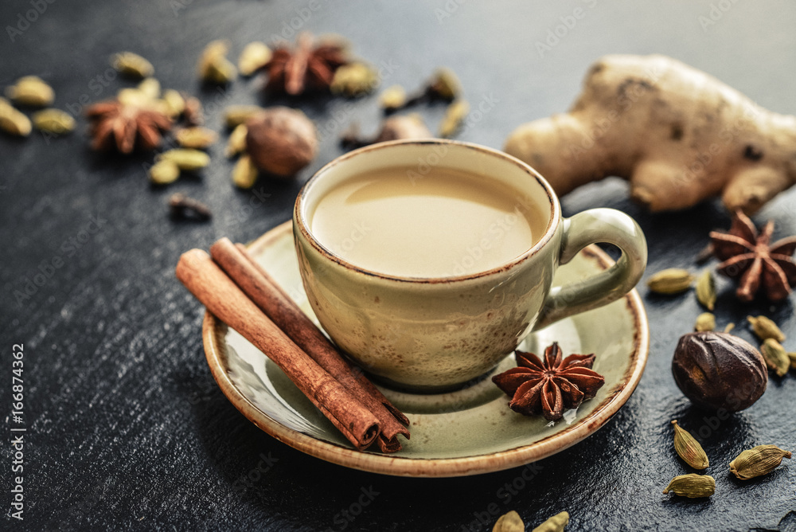

A classic hot cup of tea made in a few simple steps
I drink a cup of chai almost every morning. My day basically doesn't feel started until I've drank at least one cup, and making it is a bit of a meditative ritual before leaping into work.
Before you jump in, keep in mind that not every chai tastes the same, so if you are looking to replicate a cup you had elsewhere, you may need to get their Chai Masala Spice Mix. The ratios of the spices is going to be different for everyone. I'm lucky to have my parents give me some of theirs, but I think it's easier if you find your own, shop around different shops or look online for a mix that suits your needs more. If you aren't sure what particular taste of the mix you like, look up some basic ingredients in a typical Chai Masala Spice Mix, and taste each one individually and adjust your ratios accordingly. I personally like a bit more cardamom and garlic powder in mine, but less cloves.
Here are the ingredients, but quantities I will discuss in the steps.
Ingredients
- Chai Tea loose leaf*
- Chai Masala Spice Mix
- Ginger Root
- Milk
- Sugar
* I strongly suggest against using Chai Tea mixes that already have other spices or flavouring in them. Look for chai that is just the tea itself, such as the Wagh Bakri brand of loose tea. Since you'll be adding your own spice mix, you can play around with the flavour more.
Here is the equipment you'll need
- Pot to make the chai in
- Grater or Zester
- Strainer
Steps
Here is the list of steps to prepare a pot of Masala Chai
- Fill your pot with enough water to fill 3/4's of the amount of chai you want to make and plate it on high heat on your stove.
- Take your loose leaf chai, and add just enough to cover the surface of the water. If you find you like a stronger tea taste, add more, but probably don't overdo it, or it will be very bitter.
- When adding the Masala Spice mix, I like to add half the amount of loose leaf chai I added. I suggest making changes to the ratio from here. Since my spice mix has more cardamom and ginger flavouring, those flavours are subtle but noticeable but not overpowering.
- Take a slice of ginger root and grate it directly into the chai, skin on is fine (just cut off any bits that don't look appealing). The more ginger you add, the spicier your chai will be. I personally like the ginger throat clearing effect to be very strong so I add a lot of ginger to mine.
- With the spices, tea and ginger added, let the water heat up to a boil. If you want a stronger tea, put the heat down to medium-high.
- Once the water begins to boil, add your milk. My rule of thumb is to add enough milk where the watery look is gone, and then just a bit more until it's not too dark. Adding more milk will negate the spiciness, so just keep that in mind in case you want to add milk later to make it less spicy
- The house rule now is to let the chai boil, and then left the pot for ~20 seconds, and then put it down, and let it boil again. Not sure why, but this last step everyone has their own spin on it. After the second boil, remove from the stove.
- Strain the chai into a teapot or directly into your cup. Serve and enjoy!